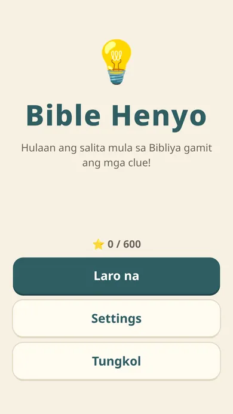
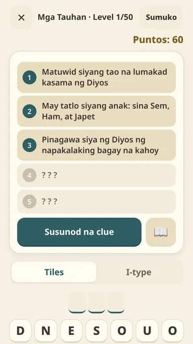
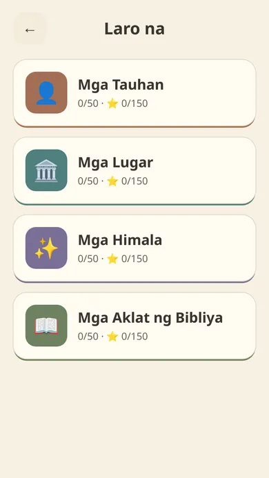
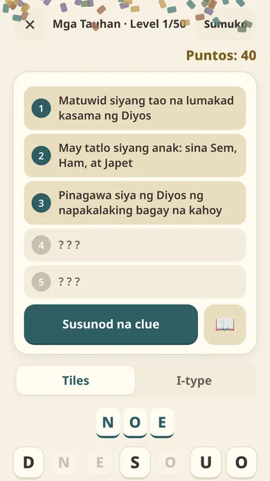
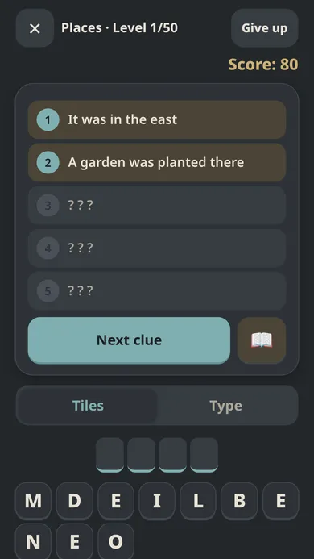

Disclaimer: Bible Henyo is not an official jw.org app. Hindi opisyal na app ng jw.org. All clues are original and written for this game.
What's inside
200 levels
People, Places, Miracles and Books of the Bible, 50 each, from easy to hard.
People, Places, Miracles and Books of the Bible, 50 each, from easy to hard.
Pinoy Henyo style
Reveal clues one at a time and guess with letter tiles or the keyboard. Fewer clues, higher score.
Reveal clues one at a time and guess with letter tiles or the keyboard. Fewer clues, higher score.
Tagalog and English
Switch language any time.
Switch language any time.
Bible references
Every answer has a verse, with a link to jw.org that opens in your browser.
Every answer has a verse, with a link to jw.org that opens in your browser.
Relaxed play
No ads, no timer. Up to 3 stars per level.
No ads, no timer. Up to 3 stars per level.
Easy on the eyes
Soft colors and a dark mode. Great for the whole family.
Soft colors and a dark mode. Great for the whole family.





Privacy
No ads, no account, no analytics, no in-app purchases, no internet permission. Your progress stays on your device. Read the full privacy policy.